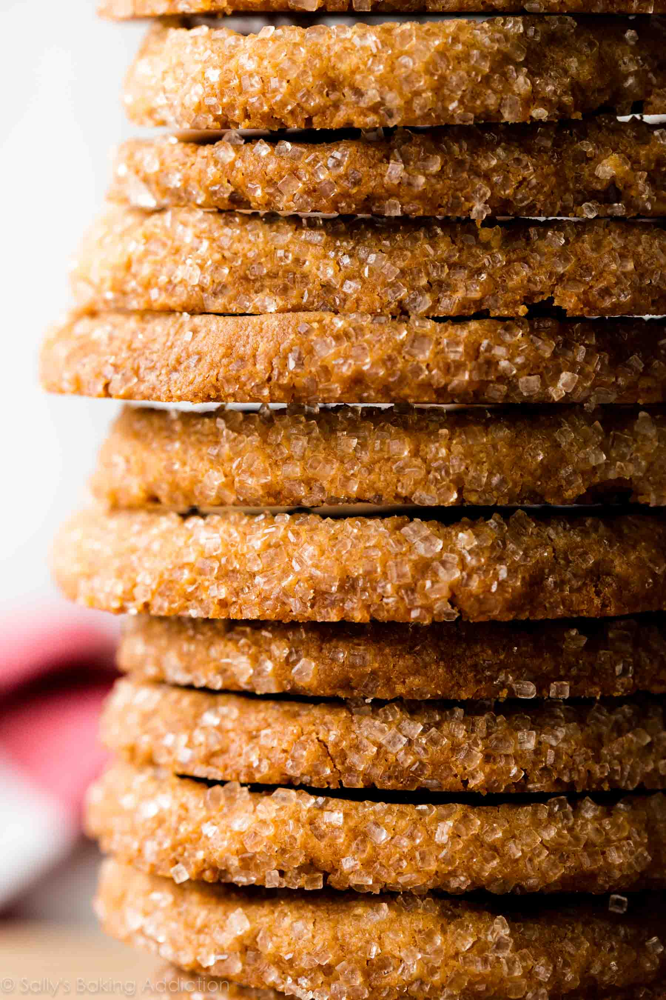

return
Brown suggar shortbread

Description
In the time that this delicacy was invented, shortbread was considered a special, luxurious treat usually only served for weddings or important birthdays. We’re fortunate enough to live in a time where this delicious biscuit is more readily available! As are the simple ingredients require to make it.
Scottish shortbread is just a super simplified shortbread recipe, one that is made to be nice and crisp. So good luck eating just one.
Ingredients
- 1 cup butter, softened
- 1 1/4 cups packed brown sugar
- 1 teaspoon vanilla extract
- 2 1/2 cups all-purpose flour
Preparation
- In large mixer bowl, beat margarine and sugar until creamy. Add vanilla; then gradually beat in flour, blending thoroughly.
- Gather dough into a ball, wrap tightly in plastic wrap, and refrigerate until firm (1 hour) or for up to 3 days.
- Preheat oven to 300 degrees F (150 degrees C).
- On lightly floured board, roll out dough to 1/4" thick. Cut, place on lightly greased sheets. Bake 35-40 minutes or until firm to the touch (press very lightly to test). Transfer to racks and let cool. Store in an airtight container.
Up